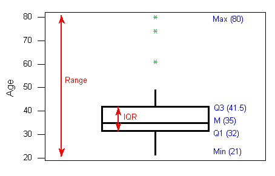
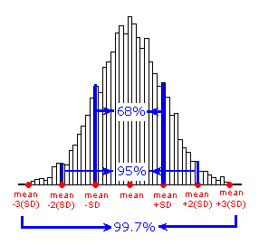

Interpreting Data Using Descriptive Statistics with R

Introduction
Exploratory Data Analysis refers to the critical process of performing initial investigations on data so as to discover patterns,to spot anomalies,to test hypothesis and to check assumptions with the help of summary statistics and graphical representations.
Exploratory data analysis (EDA) methods are often called Descriptive Statistics due to the fact that they simply describe, or provide estimates based on, the data at hand.
Exploratory Data Analysis
“Exploratory data analysis can never be the whole story, but nothing else can serve as the foundation stone.” —John Tukey
EDA consists of:
- Organizing and summarizing the raw data,
- Discovering important features and patterns in the data and any striking deviations from those patterns
- Interpreting our findings in the context of the problem
And can be useful for:
- Describing the distribution of a single variable (center, spread, shape, outliers)
- Checking data (for errors or other problems)
- Checking assumptions to more complex statistical analyses
- Investigating relationships between variables
Features of Exploratory Data Analysis
- In this notebook covers two broad topics:
- Examining Distributions — exploring data one variable at a time.
- Examining Relationships — exploring data two variables at a time.
- In Exploratory Data Analysis, our exploration of data will always consist of the following two elements:
- Visual displays
- Numerical measures.
Working with Data using R
In this lesson, we will explore pulse dataset using R. In addition, we will perform exploratory data analysis.
Load Packages
# Load packages
library(tidyverse)
library(ggplot2)
library(ggpubr)
library(gridExtra)
library(gtsummary)
library(gt)
library(datasets)Load and Explore Data
# Read Data
data <- read.csv("data/pulse_data.csv", stringsAsFactors = TRUE)
gt(head(data)) | Height | Weight | Age | Gender | Smokes | Alcohol | Exercise | Ran | Pulse1 | Pulse2 | BMI | BMICat |
|---|---|---|---|---|---|---|---|---|---|---|---|
| 1.73 | 57 | 18 | Female | No | Yes | Moderate | No | 86 | 88 | 19.04507 | Underweight |
| 1.79 | 58 | 19 | Female | No | Yes | Moderate | Yes | 82 | 150 | 18.10181 | Underweight |
| 1.67 | 62 | 18 | Female | No | Yes | High | Yes | 96 | 176 | 22.23099 | Normal |
| 1.95 | 84 | 18 | Male | No | Yes | High | No | 71 | 73 | 22.09073 | Normal |
| 1.73 | 64 | 18 | Female | No | Yes | Low | No | 90 | 88 | 21.38394 | Normal |
| 1.84 | 74 | 22 | Male | No | Yes | Low | Yes | 78 | 141 | 21.85728 | Normal |
# Check data structure
glimpse(data)Rows: 108
Columns: 12
$ Height <dbl> 1.73, 1.79, 1.67, 1.95, 1.73, 1.84, 1.62, 1.69, 1.64, 1.68, 1…
$ Weight <dbl> 57, 58, 62, 84, 64, 74, 57, 55, 56, 60, 75, 58, 68, 59, 72, 1…
$ Age <int> 18, 19, 18, 18, 18, 22, 20, 18, 19, 23, 20, 19, 22, 18, 18, 2…
$ Gender <fct> Female, Female, Female, Male, Female, Male, Female, Female, F…
$ Smokes <fct> No, No, No, No, No, No, No, No, No, No, No, No, Yes, No, No, …
$ Alcohol <fct> Yes, Yes, Yes, Yes, Yes, Yes, Yes, Yes, Yes, Yes, Yes, No, Ye…
$ Exercise <fct> Moderate, Moderate, High, High, Low, Low, Moderate, Moderate,…
$ Ran <fct> No, Yes, Yes, No, No, Yes, No, No, No, Yes, Yes, No, No, No, …
$ Pulse1 <dbl> 86, 82, 96, 71, 90, 78, 68, 71, 68, 88, 76, 74, 70, 78, 69, 7…
$ Pulse2 <dbl> 88, 150, 176, 73, 88, 141, 72, 77, 68, 150, 88, 76, 71, 82, 6…
$ BMI <dbl> 19.04507, 18.10181, 22.23099, 22.09073, 21.38394, 21.85728, 2…
$ BMICat <fct> Underweight, Underweight, Normal, Normal, Normal, Normal, Nor…One Categorical Variable
- Distribution of One Categorical Variable
- Numerical Summaries
- One-way Frequency Table(Counts)
- One-way Frequency Table(Percentages)
- One-way Frequency Table(Combination of Counts and Percentages)
- Visual or Graphical Displays
- Bar Chart - Great for categorical data visualization
- Pie Chart - Use with caution for summarizing categorical data
Distribution of One Categorical Variable
Here is some information that would be interesting to get from these data:
- What percentage of the sampled respondents fall into each category?
- How are respondents divided across the three body image categories? Are they equally divided? If not, do the percentages follow some other kind of pattern?
Numerical Measures
In order to summarize the distribution of a categorical variable, we first create a table of the different values (categories) the variable takes, how many times each value occurs (count) and, more importantly, how often each value occurs (by converting the counts to percentages).
- The result is often called a Frequency Distribution or Frequency Table.
- A Frequency Distribution or Frequency Table is the primary set of numerical measures for one categorical variable.
- Consists of a table with each category along with the count and percentage for each category.
- Provides a summary of the distribution for one categorical variable.
One-way Frequency Table(Counts)
# One-way frequency table
data %>%
group_by(BMICat) %>%
summarise(frequency = n())# A tibble: 4 × 2
BMICat frequency
<fct> <int>
1 Normal 62
2 Obese 2
3 Overweight 17
4 Underweight 27One-way Frequency Table(Counts, Percentage)
data %>%
group_by(BMICat) %>%
summarise(counts = n()) %>%
mutate(percent = counts/sum(counts) *100) # A tibble: 4 × 3
BMICat counts percent
<fct> <int> <dbl>
1 Normal 62 57.4
2 Obese 2 1.85
3 Overweight 17 15.7
4 Underweight 27 25 Visual or Graphical Displays
There are two simple graphical displays for visualizing the distribution of one categorical variable:
- Bar Charts
- Pie Charts
Bar Charts
- To describe the number of observations in each category of the discrete variable
- To visualize estimated error for discrete variables
# Visualize one categorical variable; `fct_infreq()` for sorting the bar
data %>%
ggplot(aes(x = BMICat))+
geom_bar(fill = "#97B3C6")
# # Sorting Bar Chart by using `fct_infreq()`
data %>%
ggplot(aes(x = fct_infreq(BMICat)))+
geom_bar(fill = "#97B3C6")
# Summaries(counts) data for visualizing the distribution
df1 <- data %>%
group_by(BMICat) %>%
summarise(counts = n()) %>%
arrange(counts)
df1# A tibble: 4 × 2
BMICat counts
<fct> <int>
1 Obese 2
2 Overweight 17
3 Underweight 27
4 Normal 62# Show the observations number on the top the bar
ggplot(df1, aes(x = BMICat, y = counts)) +
geom_bar(fill = "#97B3C6", stat = "identity") +
geom_text(aes(label = counts), vjust = -0.3)
# # Sorting bar by using `reorder()`
ggplot(df1, aes(x = reorder(BMICat, counts), y = counts)) +
geom_bar(fill = "#97B3C6", stat = "identity") +
geom_text(aes(label = counts), vjust = -0.3)
# # Sorting bar by using `reorder()` and `desc()`
ggplot(df1, aes(x = reorder(BMICat, desc(counts)), y = counts)) +
geom_bar(fill = "#97B3C6", stat = "identity") +
geom_text(aes(label = counts), vjust = -0.3)
# Calculate percentage of each category
df2 <- data %>%
group_by(BMICat) %>%
summarise(counts = n()) %>%
arrange(desc(BMICat)) %>%
mutate(prop = round(counts*100/sum(counts), 1))
df2# A tibble: 4 × 3
BMICat counts prop
<fct> <int> <dbl>
1 Underweight 27 25
2 Overweight 17 15.7
3 Obese 2 1.9
4 Normal 62 57.4# Sorting the bars using `reorder()`
ggplot(df2, aes(x = reorder(BMICat, counts), y = prop)) +
geom_bar(fill = "#97B3C6", stat = "identity") +
geom_text(aes(label = prop), vjust = -0.3)
# Show the percentage(%) on the of the bar
ggplot(df2, aes(x = BMICat, y = prop)) +
geom_bar(fill = "#97B3C6", stat = "identity") +
geom_text(aes(label = prop), vjust = -0.3)
# Sorting the bars using `reorder()` and `desc()`
ggplot(df2, aes(x = reorder(BMICat, desc(prop)), y = prop)) +
geom_bar(fill = "#97B3C6", stat = "identity") +
geom_text(aes(label = prop), vjust = -0.3)
# Customize the plot
ggplot(df2, aes(x = reorder(BMICat, desc(counts)), y = prop)) +
geom_bar(fill = "#97B3C6", stat = "identity") +
geom_text(aes(label = prop), vjust = -0.3)+
labs(title = "Distribution of BMICat",
x = "BMI Category",
y = "Proportion",
caption = "Data Source: https://bolt.mph.ufl.edu/") 
# Create bar chart using ggpubr
ggbarplot(df2, x = "BMICat", y = "counts", fill = "#97B3C6")
# show counts
ggbarplot(df2, x = "BMICat", y = "counts", fill = "#97B3C6", label = TRUE, lab.pos = "out")
# show counts
ggbarplot(df2, x = "BMICat", y = "prop", fill = "#97B3C6", label = TRUE, lab.pos = "out")
Pie charts
ggpie(df2, "prop", label = "BMICat", fill = "BMICat",
color = "white",
palette = c("#00AFBB", "#E7B800", "#FC4E07", "#97B3C6"))
# Show group names and value as labels
labs <- paste0(df2$BMICat, " (", df2$prop, "%)")
ggpie(df2, "prop", label =labs, fill = "BMICat",
color = "white",
palette = c("#00AFBB", "#E7B800", "#FC4E07", "#97B3C6"), lab.pos = "in")
# Change the position and font color of labels
labs <- paste0(df2$BMICat, "(", df2$prop, "%)")
ggpie(df2, "prop", label =labs,
lab.pos = "in", lab.font = "white",
fill = "BMICat",
color = "white",
palette = c("#00AFBB", "#E7B800", "#FC4E07", "#97B3C6"))
One Quantitative Variable
- Distribution of One Quantitative Variable
- Numerical Measures
- Graphs
Distribution of One Quantitative Variable
In this section, we will explore the data collected from a quantitative variable, and learn how to describe and summarize the important features of its distribution.
We will learn how to display the distribution using graphs and discuss a variety of numerical measures.
Numerical Measures
Measures of Center
- Introduction
- Mean
- Median
- Comparing the Mean and the Median
Mean
# Average BMI
data %>%
summarise(avg_bmi = mean(BMI)) avg_bmi
1 22.03186Median
# Median BMI
data %>%
summarise(median_bmi = median(BMI)) median_bmi
1 21.57798Graphs
Histograms
Shape: Overall appearance of histogram. Can be symmetric, bell-shaped, left skewed, right skewed, etc.
Center: Mean or Median
Spread: How far our data spreads. Range, Interquartile Range (IQR),standard deviation, variance.
Outliers: Data points that fall far from the bulk of the data
Interpretation: The distribution of height is bell shaped with a center of about 10.001, a range of 11 inches (5 to 16), and no apparent outliers.
# Calculate average height
data %>%
summarise(avg_height = mean(Height)) avg_height
1 1.732685# Show the center in histogram
gghistogram(data, x = "Height", add = "mean")
# Calculate median height
data %>%
summarise(median_height = median(Height)) median_height
1 1.73# Show the center in histogram
gghistogram(data, x = "Height", add = "median")
# Add mean
gghistogram(data, x = "Height", bins = 15, fill = "#97B3C6", title = "Histogram of Height", xlab = "Height(m)", ylab = "Frequency", add = "mean") Interpretation: The distribution of height is roughly bell
shaped with a center of about 1.7m, a range of 0.55 meters (1.40 to 1.95), and no apparent outliers.
Interpretation: The distribution of height is roughly bell
shaped with a center of about 1.7m, a range of 0.55 meters (1.40 to 1.95), and no apparent outliers.
# Change the bins size
gghistogram(data, x = "Height", bins = 15, fill = "#58508d" , add = "mean")
# Compare mean and median
data %>%
summarise(avg_bmi = mean(BMI),
median_bmi = median(BMI)) avg_bmi median_bmi
1 22.03186 21.57798Describing Distributions
- Features of Distributions of Quantitative Variables
- Shape (Symmetry/Skewness, Modality)
- Center
- Spread
- Outliers
# Load and explore diabetes data
diabetes <- read.csv("data/diabetes.csv", stringsAsFactors = TRUE)
gt(head(diabetes))| Pregnancies | Glucose | BloodPressure | SkinThickness | Insulin | BMI | DiabetesPedigreeFunction | Age | Outcome |
|---|---|---|---|---|---|---|---|---|
| 6 | 148 | 72 | 35 | 0 | 33.6 | 0.627 | 50 | 1 |
| 1 | 85 | 66 | 29 | 0 | 26.6 | 0.351 | 31 | 0 |
| 8 | 183 | 64 | 0 | 0 | 23.3 | 0.672 | 32 | 1 |
| 1 | 89 | 66 | 23 | 94 | 28.1 | 0.167 | 21 | 0 |
| 0 | 137 | 40 | 35 | 168 | 43.1 | 2.288 | 33 | 1 |
| 5 | 116 | 74 | 0 | 0 | 25.6 | 0.201 | 30 | 0 |
Shape
When describing the shape of a distribution, we should consider:
- Symmetry/skewness of the distribution.
- Peakedness (modality) — the number of peaks (modes) the distribution has.
Symmetric Distributions
Note that all three distributions are symmetric, but are different in their modality (peakedness).
- The first distribution is unimodal — it has one mode (roughly at 10) around which the observations are concentrated.
- The second distribution is bimodal — it has two modes (roughly at 10 and 20) around which the observations are concentrated.
- The third distribution is kind of flat, or uniform. The distribution has no modes, or no value around which the observations are concentrated. Rather, we see that the observations are roughly uniformly distributed among the different values.
# Check distribution of age
gghistogram(diabetes, x = "BMI", fill = "#665191")
Skewed Right Distributions
A distribution is called skewed right if, as in the histogram above, the right tail (larger values) is much longer than the left tail (small values).
# Check distribution of age
gghistogram(diabetes, x = "Age", fill = "#665191")
Skewed Left Distributions
A distribution is called skewed left if, as in the histogram above, the left tail (smaller values) is much longer than the right tail (larger values).
# Check distribution of Glucose
gghistogram(diabetes, x = "Glucose", fill = "#665191")
Comments: - Distributions with more than two peaks are generally called multimodal. - Bimodal or multimodal distributions can be evidence that two distinct groups are represented. - Unimodal, Bimodal, and multimodal distributions may or may not be symmetric.

Center
The center of the distribution is often used to represent a typical value.
# Check distribution of BMI
gghistogram(diabetes, x = "BMI", fill = "#665191", add = "mean", add_density = TRUE)
# Check distribution of BMI
gghistogram(diabetes, x = "BMI", fill = "#665191", add = "median")
Spread
One way to measure the spread (also called variability or variation) of the distribution is to use the approximate range covered by the data.
# Check distribution of BloodPressure
gghistogram(diabetes, x = "BloodPressure", fill = "#665191", add = "median")
Outliers
Outliers are observations that fall outside the overall pattern.
# Check distribution of BloodPressure
gghistogram(diabetes, x = "BloodPressure", fill = "#665191", add = "median")
Measures of Spread
- Range
- Inter-Quartile Range (IQR)
- Standard Deviation
- Properties of the Standard Deviation
- Choosing Numerical Measures
Range
The range covered by the data is the most intuitive measure of variability. The range is exactly the distance between the smallest data point (min) and the largest one (Max).
Range = Max – min
data %>%
summarise(max_height = max(Height),
min_height = min(Height),
range = max_height - min_height) max_height min_height range
1 1.95 1.4 0.55Inter-Quartile Range (IQR)
While the range quantifies the variability by looking at the range covered by ALL the data, the Inter-Quartile Range or IQR measures the variability of a distribution by giving us the range covered by the MIDDLE 50% of the data.
- IQR = Q3 – Q1
- Q3 = 3rd Quartile = 75th Percentile
- Q1 = 1st Quartile = 25th Percentile
data %>%
summarise(
min = fivenum(Weight)[1],
Q1 = fivenum(Weight)[2],
median = fivenum(Weight)[3],
Q3 = fivenum(Weight)[4],
max = fivenum(Weight)[5],
IQR = Q3 - Q1) min Q1 median Q3 max IQR
1 41 56.5 63 75 110 18.5Standard Deviation
data %>%
summarise(avg_height = mean(Height),
std = sd(Height)) avg_height std
1 1.732685 0.1012133Variance
data %>%
summarise(avg_height = mean(Height),
var_height = var(Height)) avg_height var_height
1 1.732685 0.01024412Measures of Position
- Percentiles
- Five-Number Summary
- Standardized Scores (Z-Scores)
- Measures of Position
Percentiles
In general the P-th percentile can be interpreted as a location in the data for which approximately P% of the other values in the distribution fall below the P-th percentile and (100 –P)% fall above the P-th percentile.
Five Number Summary
data %>%
summarise(
min = fivenum(Weight)[1],
Q1 = fivenum(Weight)[2],
median = fivenum(Weight)[3],
Q3 = fivenum(Weight)[4],
max = fivenum(Weight)[5]) min Q1 median Q3 max
1 41 56.5 63 75 110Standardized Scores (Z-Scores)
Z = (x – mean)/standard deviation
data %>%
mutate(zscore = (BMI - mean(BMI) / sd(BMI))) %>%
head() Height Weight Age Gender Smokes Alcohol Exercise Ran Pulse1 Pulse2 BMI
1 1.73 57 18 Female No Yes Moderate No 86 88 19.04507
2 1.79 58 19 Female No Yes Moderate Yes 82 150 18.10181
3 1.67 62 18 Female No Yes High Yes 96 176 22.23099
4 1.95 84 18 Male No Yes High No 71 73 22.09073
5 1.73 64 18 Female No Yes Low No 90 88 21.38394
6 1.84 74 22 Male No Yes Low Yes 78 141 21.85728
BMICat zscore
1 Underweight 12.37439
2 Underweight 11.43112
3 Normal 15.56030
4 Normal 15.42004
5 Normal 14.71326
6 Normal 15.18659Measures of Position
Measures of position also allow us to compare values from different distributions. For example, we can present the percentiles or z-scores of an individual’s height and weight. These two measures together would provide a better picture of how the individual fits in the overall population than either would alone.
Although measures of position are not stressed in this course as much as measures of center and spread, we have seen and will see many measures of position used in various aspects of examining the distribution of one variable and it is good to recognize them as measures of position when they appear.
Outliers Detection
- Using the IQR to Detect Outliers
- The 1.5(IQR) Criterion for Outliers
- The 3(IQR) Criterion for Outliers
- Understanding Outliers
Using the IQR to Detect Outliers
So far we have quantified the idea of center, and we are in the middle of the discussion about measuring spread, but we haven’t really talked about a method or rule that will help us classify extreme observations as outliers. The IQR is commonly used as the basis for a rule of thumb for identifying outliers.
The 1.5(IQR) Criterion for Outliers
An observation is considered a suspected outlier or potential outlier if it is:
- below Q1 – 1.5(IQR) or
- above Q3 + 1.5(IQR)
The following picture (not to scale) illustrates this rule:
The 3(IQR) Criterion for Outliers
An observation is considered an EXTREME outlier if it is:
- below Q1 – 3(IQR) or
- above Q3 + 3(IQR)
ds <- read.csv("data/500_Person_Gender_Height_Weight_Index.csv")
head(ds) Gender Height Weight Index
1 Male 174 96 4
2 Male 189 87 2
3 Female 185 110 4
4 Female 195 104 3
5 Male 149 61 3
6 Male 189 104 3gghistogram(ds, x = "Height")
gghistogram(ds, x = "Weight")
Boxplots
- The Five Number Summary
- The Boxplot
- Side-By-Side (Comparative) Boxplots
The Five Number Summary
So far, in our discussion about measures of spread, some key players were:
- the extremes (min and Max), which provide the range covered by all the data; and
- the quartiles (Q1, M and Q3), which together provide the IQR, the range covered by the middle 50% of the data.
Recall that the combination of all five numbers (min, Q1, M, Q3, Max) is called the five number summary, and provides a quick numerical description of both the center and spread of a distribution.
ds %>%
summarise(
min = fivenum(Height)[1],
Q1 = fivenum(Height)[2],
median = fivenum(Height)[3],
Q3 = fivenum(Height)[4],
max = fivenum(Height)[5]) min Q1 median Q3 max
1 140 156 170.5 184 199The Boxplot
- The central box spans from Q1 to Q3. In our example, the box spans from 32 to 41.5. Note that the width of the box has no meaning.
- A line in the box marks the median M, which in our case is 35.
- Lines extend from the edges of the box to the smallest and largest observations that were not classified as suspected outliers (using the 1.5xIQR criterion). In our example, we have no low outliers, so the bottom line goes down to the smallest observation, which is 21. Since we have three high outliers (61,74, and 80), the top line extends only up to 49, which is the largest observation that has not been flagged as an outlier.
4. outliers are marked with asterisks (*). To summarize: the following information is visually depicted in the boxplot:
the five number summary (blue) the range and IQR (red) outliers (green)

Side-By-Side (Comparative) Boxplots
ggboxplot(ds, y = "Height")
ggboxplot(ds, y = "Weight")
ggboxplot(ds, x = "Gender", y = "Height")
The “Normal” Shape
- The Standard Deviation Rule
- Visual Methods of Assessing Normality
- Standardized Scores (Z-Scores)
The Standard Deviation Rule
The Standard Deviation Rule:
- Approximately 68% of the observations fall within 1 standard deviation of the mean.
- Approximately 95% of the observations fall within 2 standard deviations of the mean.
- Approximately 99.7% (or virtually all) of the observations fall within 3 standard deviations of the mean. 

Visual Methods of Assessing Normality

Standardized Scores (Z-Scores)
Z = (x - mean) / standard deviation
ds %>%
mutate(zscore = (Height - mean(Height)) / sd(Height)) %>%
head() Gender Height Weight Index zscore
1 Male 174 96 4 0.2476907
2 Male 189 87 2 1.1637067
3 Female 185 110 4 0.9194357
4 Female 195 104 3 1.5301130
5 Male 149 61 3 -1.2790025
6 Male 189 104 3 1.1637067Role Type Classification
While it is fundamentally important to know how to describe the distribution of a single variable, most studies pose research questions that involve exploring the relationship between two (or more) variables. These research questions are investigated using a sample from the population of interest.
Example Research Question(s)
- Is there a relationship between gender and test scores on a particular standardized test? Other ways of phrasing the same research question:
- Is performance on the test related to gender?
- Is there a gender effect on test scores?
- Are there differences in test scores between males and females?
- Are the smoking habits of a person (yes, no) related to the person’s gender(male, female)?
Role of a Variable in a Study
In most studies involving two variables, each of the variables has a role. We distinguish between:
- Response variable — the outcome of the study; and
- Eexplanatory variable — the variable that claims to explain, predict or affect the response.
As we mentioned earlier the variable we wish to predict is commonly called the dependent variable, the outcome variable, or the response variable. Any variable we are using to predict (or explain differences) in the outcome is commonly called an explanatory variable, an independent variable, a predictor variable, or a covariate.
Typically the explanatory variable is denoted by X, and the response variable by Y.
Example
- Research Question: Is there a relationship between gender and test scores on a particular standardized test? Other ways of phrasing the same research question:
Is performance on the test related to gender?
Is there a gender effect on test scores?
Are there differences in test scores between males and females?
Gender is the explanatory variable
Test score is the response variable
Role-Type Classification
If we further classify each of the two relevant variables according to type (categorical or quantitative), we get the following 4 possibilities for “role-type classification”
- Categorical explanatory and quantitative response (Case CQ)
- Categorical explanatory and categorical response (Case CC)
- Quantitative explanatory and quantitative response (Case QQ)
- Quantitative explanatory and categorical response (Case QC)
Figure 1: Figure Caption
Example
- Research Question: Is there a relationship between gender and test scores on a particular standardized test? Other ways of phrasing the same research question:
Is performance on the test related to gender?
Is there a gender effect on test scores?
Are there differences in test scores between males and females?
Gender is the explanatory variable
Test score is the response variable
Therefore this is an example of case C → Q.
Case C-Q Categorical Explanatory and Quantitative Response
data %>%
select(Gender, BMI) %>%
group_by(Gender) %>%
summarise(Avg_BMI = mean(BMI))# A tibble: 2 × 2
Gender Avg_BMI
<fct> <dbl>
1 Female 20.8
2 Male 23.1data %>%
group_by(Gender) %>%
summarise(n = n(),
min = fivenum(BMI)[1],
Q1 = fivenum(BMI)[2],
median = fivenum(BMI)[3],
Q3 = fivenum(BMI)[4],
max = fivenum(BMI)[5])# A tibble: 2 × 7
Gender n min Q1 median Q3 max
<fct> <int> <dbl> <dbl> <dbl> <dbl> <dbl>
1 Female 50 16.6 19.0 20.6 22.2 29.0
2 Male 58 16.8 20.2 22.9 25.1 32.1ggboxplot(data, x = "Gender", y = "BMI")
Case C-C - Two Categorical Variables
# https://www.statology.org/dplyr-crosstab/
df3 <- data %>%
group_by(Gender, Ran) %>%
tally() %>%
spread(Ran, n)
df3 # A tibble: 2 × 3
# Groups: Gender [2]
Gender No Yes
<fct> <int> <int>
1 Female 28 22
2 Male 35 23# https://www.statology.org/dplyr-crosstab/
df3 <- data %>%
group_by(Gender, BMICat) %>%
tally() %>%
spread(BMICat, n)
df3# A tibble: 2 × 5
# Groups: Gender [2]
Gender Normal Obese Overweight Underweight
<fct> <int> <int> <int> <int>
1 Female 29 NA 3 18
2 Male 33 2 14 9Case Q-Q - Two Quantitative Variables
data %>%
select(Height, Weight) %>%
cor() Height Weight
Height 1.0000000 0.7413042
Weight 0.7413042 1.0000000Scatterplots
- Creating Scatterplots
- Interpreting Scatterplots
- Direction
- Form
- Strength
Interpreting Scatterplots

Figure 2: Figure Caption
Direction
Figure 3: Figure Caption
A positive (or increasing) relationship means that an increase in one of the variables is associated with an increase in the other.
A negative (or decreasing) relationship means that an increase in one of the variables is associated with a decrease in the other.
Not all relationships can be classified as either positive or negative.
Form

Figure 4: Figure Caption
The form of the relationship is its general shape. When identifying the form, we try to find the simplest way to describe the shape of the scatterplot. There are many possible forms. Here are a couple that are quite common: Relationships with a linear form are most simply described as points scattered about a line:

Figure 5: Figure Caption
A scatterplot in which the points are slightly above or below a line which has been drawn through the points. Overall, the points create a shape that appears to be a fat line. In this example, the points create a negative relationship.Relationships with a non-linear (sometimes called curvilinear) form are most simply described as points dispersed around the same curved line:
Figure 6: Figure Caption
There are many other possible forms for the relationship between two quantitative variables, but linear and curvilinear forms are quite common and easy to identify. Another form-related pattern that we should be aware of is clusters in the data:
Strength
Figure 7: Figure Caption
The strength of the relationship is determined by how closely the data follow the form of the relationship. Let’s look, for example, at the following two scatterplots displaying positive, linear relationships:
The strength of the relationship is determined by how closely the data points follow the form. We can see that in the left scatterplot the data points follow the linear pattern quite closely. This is an example of a strong relationship. In the right scatterplot, the points also follow the linear pattern, but much less closely, and therefore we can say that the relationship is weaker. In general, though, assessing the strength of a relationship just by looking at the scatterplot is quite problematic, and we need a numerical measure to help us with that. We will discuss that later in this section.
Figure 8: Figure Caption
Data points that deviate from the pattern of the relationship are called outliers. We will see several examples of outliers during this section. Two outliers are illustrated in the scatterplot below:
Figure 9: Figure Caption
ggscatter(data, x = "Height", y = "Weight", shape = 21, size = 3, add = "reg.line", fill = "lightgray", color = "Gender")
Jubayer Hossain
Founder & Management Lead
I am Jubayer, recent alumni with Bachelor and Master’s in Microbiology. I am the founder of CHIRAL Bangladesh, a non-profit organization dedicated to health research to improve lives in Bangladesh. I aspire to maximize the quality of life of the human around me by working at the intersection of education, technology, and health research.